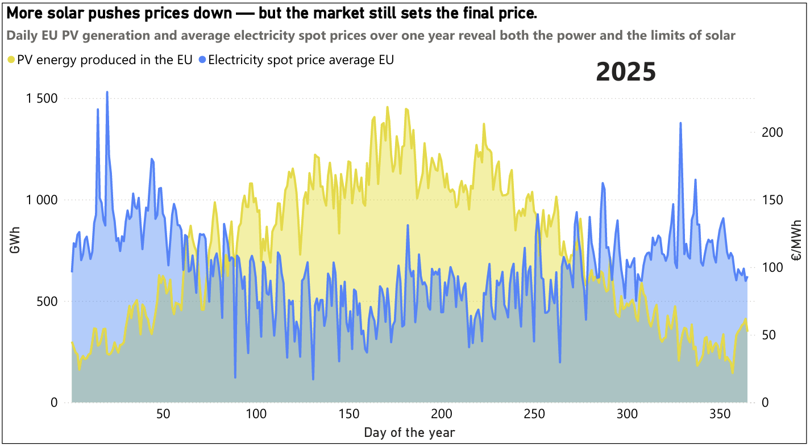

Understanding how renewable generation, market fundamentals, and system flexibility shape European power markets.
European electricity markets are undergoing a fundamental transformation. As solar capacity expands across the continent, the relationship between renewable generation and wholesale prices becomes increasingly complex—revealing both opportunities and structural challenges.

Data source: Energy-charts
Over the past year, daily solar PV generation in the EU has moved from modest winter levels to sustained summer peaks. In mid-winter, PV output typically sits in the low hundreds of GWh per day, while late spring and early summer regularly exceed 1,200 GWh/day. Prices respond to this shift: low-solar periods are associated with sharp price spikes, while high-solar periods tend to coincide with lower and more stable prices.
This confirms a reality that is now well understood in European power markets: solar is no longer marginal. It plays an active role in shaping spot prices and reducing exposure to high-cost generation, particularly during daylight hours.
However, the relationship is not linear. Even on days with very high solar production, prices do not always fall as much as one might expect. Several high-PV days still record prices in the 60–90 €/MWh range, while some lower-production days experience extreme price movements. These exceptions are not noise — they are signals.
What they reveal is the growing importance of system constraints. Grid congestion, demand patterns, cross-border flows, and the availability of flexibility all influence how effectively solar generation translates into lower prices. When the system cannot absorb additional solar energy efficiently, the price impact weakens, even at high production levels.
The data also suggests that solar helps smooth price volatility, though it does not eliminate it. Winter remains the most volatile period, with large price swings driven by scarcity. In summer, volatility is reduced, but not removed, reinforcing the idea that generation alone is not enough — flexibility determines outcomes.
Let's discuss how data-driven analysis can support your strategy